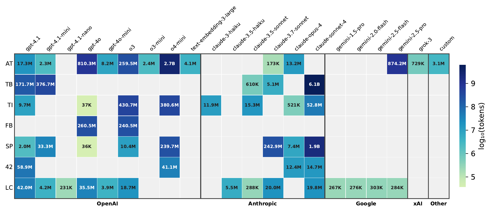
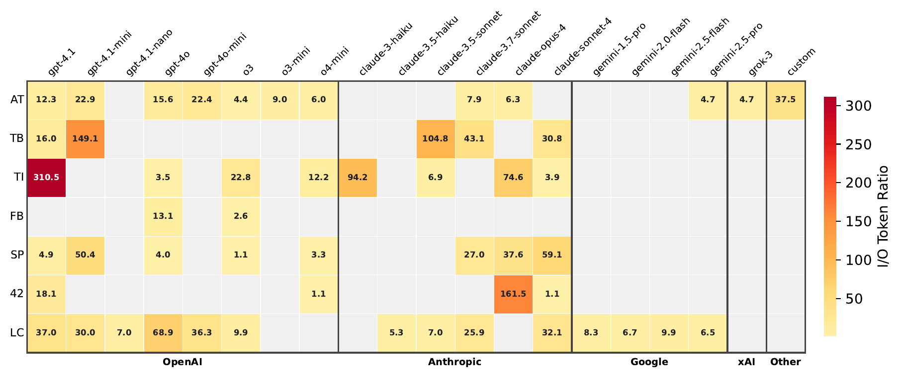
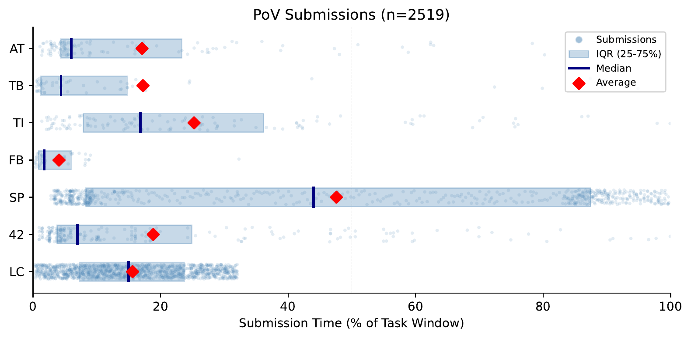
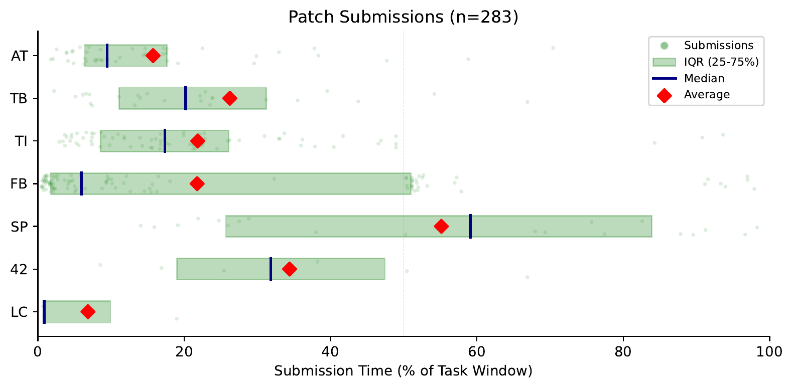
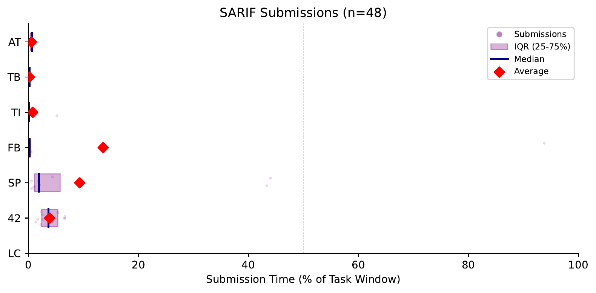
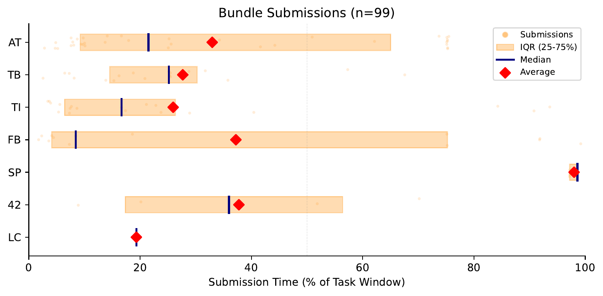

SoK: DARPA's AI Cyber Challenge (AIxCC) — Competition Design, Architectures, and Lessons Learned
Companion site for the AIxCC SoK study — a single entry point that compiles all of the study's references, artifacts, supplemental analysis, and the participating teams' public materials.
Open ScienceSoK Artifact¶
Some materials respect DARPA's official release timeline and are not yet public.
Currently available
- Questionnaires, meeting notes, sanitized experiment data (PF / MR / CC), and analysis scripts — Zenodo bundle at zenodo.org/records/20367274.
- AIxCC Final Challenge Set, official release at archive.aicyberchallenge.com/challenges.
Pending release
- Raw competition data (submission logs, OTEL traces, scoring breakdowns).
- CRUMBS — the organizers' competition data analysis framework.
Open ScienceCollection of Teams' Public References¶
AT Atlantis — Team Atlanta
TB Buttercup — Trail of Bits
TI RoboDuck — Theori
FB FuzzingBrain — FuzzingBrain
SP Artiphishell — Shellphish
42 BugBuster — 42-b3yond-6ug
LC Lacrosse — Lacrosse
Scoring Rules Explanation¶
The scoring system is centered around a developer-centric principle: reward outcomes that benefit project developers and penalize behaviors that would burden them. Organizers use this principle to determine when and to what extent should reward be given for each capability:
- A single PoV is not highly rewarded since it only demonstrates the vulnerability;
- Patches score highest as they directly solve security issues;
- SARIF assessments are useful but only offer non-core, semi-subjective report validation, therefore scoring lowest;
- Bundling saves developer investigation time when correct (rewarded), but largely wastes their efforts and emotions when incorrect (penalized).
Based on those weights, organizers introduce additional scoring mechanisms, like accuracy penalty and time-decay, to ensure competition fairness and balance research incentives with practicality.
Team Score Hierarchy
A team's total score is the sum of individual challenge scores:
\[ S_{\text{Team}} \;=\; \sum S_{\text{Challenge}} \]Each challenge score equals the accuracy multiplier times the sum of four capability scores:
\[ S_{\text{Challenge}} \;=\; AM \,\times\, \bigl(S_{\text{PoV}} + S_{\text{Patch}} + S_{\text{SARIF}} + S_{\text{Bundle}}\bigr) \]Accuracy Multiplier
The accuracy multiplier AM serves as a global button to encourage teams to balance effectiveness with reliability. Teams with 100% accurate submissions receive no penalty (AM = 1), while lower accuracy results in a reduced multiplier:
\[ AM \;=\; 1 - (1-r)^4, \qquad r \;=\; \frac{n_{\text{acc}}}{n_{\text{acc}} + n_{\text{inacc}}} \]The quartic formula strongly penalizes low accuracy to discourage impractical strategies, while tolerating reasonable error rates to enable research innovation. For instance, at 90% accuracy AM ≈ 0.9999 (nearly no penalty), while at 50% AM = 0.9375 and at 40% AM = 0.8704 (significant score reduction).
Each submission is classified as accurate, inaccurate, or neutral, where neutral submissions do not affect accuracy calculations. For a given capability, the classification rationale is to reward correct, non-duplicate submissions, penalize incorrect ones, and not penalize partially correct or duplicate submissions that provide real-world value:
- PoV. One reproducible PoV per vulnerability is accurate; irreproducible PoVs are inaccurate; reproducible but duplicate PoVs are neutral, since collecting diverse PoVs can benefit patch validation in practice.
- Patch. First, patches that fail to apply, build, or remediate any PoV are inaccurate. Then, the patches that fail functionality tests are neutral. This considers that CRSs may not have access to full testing functionality in practice and a CI system can help catch such issues. Finally, among passing patches, a minimal covering set is selected as accurate while the rest are inaccurate.
- SARIF and Bundle. Only fully correct submissions are accurate; others are inaccurate.
- Server errors and schema mismatches. neutral.
Time-Decayed Scoring Design
Teams' submissions earn fewer points over time, with up to 50% reduction at the deadline. \(\mathit{Score}_{\text{PoV}}\), \(\mathit{Score}_{\text{Patch}}\), and \(\mathit{Score}_{\text{SARIF}}\) share a common time-decay formula:
\[ \mathit{Score} \;=\; \mathit{weight} \times \tau, \qquad \tau \;=\; 0.5 \;+\; \frac{\text{remaining time}}{2 \times \text{total duration}} \]where remaining time is from submission to deadline, and total duration is the challenge window. \(\tau\) ranges from 1.0 (immediate) to 0.5 (at deadline). The weight for PoV, Patch, and SARIF are 2, 6, and 1, respectively. For total duration, PoV and Patch submissions are measured from challenge start to deadline (full-mode for 12 hours while delta-mode for 6 hours), while SARIF is from broadcast time.
Note that for each vulnerability, only the last submission is scored, so earlier submissions can be superseded by later ones, allowing teams to revise their submissions with a certain penalty.
Bundle Scoring
A bundle reports pairings among PoV, Patch, and broadcast SARIF that a team identifies as addressing the same vulnerability. Unlike other capabilities, bundles can yield negative scores:
\[ S_{\text{Bundle}} \;=\; \pm \Bigl( \underbrace{0.5\,(S_{\text{PoV}} + S_{\text{Patch}})}_{\text{PoV–Patch}} + \underbrace{\,1\,}_{\text{PoV–SARIF}} + \underbrace{\,2\,}_{\text{Patch–SARIF}} \Bigr) \]The sign is positive if all claimed pairings are correct, negative if any is incorrect. The more correct pairings, the higher the score (up to 7 points for vulnerabilities that have a SARIF broadcast, 4 for those without). CRS-generated SARIF may be included in bundles but does not affect scoring. Bundle scoring is indirectly affected by time-decay through the underlying PoV and Patch scores.
Patch Selection and Validation
Since a single patch may remediate multiple vulnerabilities, organizers must select which patches to credit. The selection algorithm identifies a minimal covering set: the smallest number of patches that collectively fix all validated vulnerabilities. When multiple patches cover the same vulnerability, specificity is preferred: patches fixing fewer vulnerabilities are chosen over broader ones, rewarding precise, targeted fixes. Patches not selected into this minimal set count as inaccurate.
To validate whether a patch truly remediates a vulnerability, organizers use all PoVs submitted by all teams, plus organizer-created ones, as test cases. A patch must remediate every PoV targeting its claimed vulnerability to be considered valid. This cross-team validation also reflects one collaboration approach among CRSs in practice.
Challenge Project (CP) Details¶
Detailed information about each Challenge Project (CP) in the AIxCC final round.
| Lang | Project | Category | # Harn. | CP | # CPVs | CWEs | SLOC | Commit | Cutoff | Δ Lines | Δ Files | Build | Harn. Size |
|---|---|---|---|---|---|---|---|---|---|---|---|---|---|
| C | curl | Network | 17 | cu2▲ |
1 | CWE-476 | 238K | 2d4852a |
2024-12-09 | 881 | 24 | 110s | 232.6MB |
| C | curl | Network | 17 | cu3▲ |
1 | CWE-476 | 238K | 2d4852a |
2024-12-09 | 940 | 25 | 112s | 232.8MB |
| C | curl | Network | 17 | cu4▲ |
2 | CWE-121, CWE-476 | 238K | 2d4852a |
2024-12-09 | 1252 | 33 | 109s | 232.8MB |
| C | curl | Network | 17 | cu5▲ |
2 | CWE-134, CWE-787 | 237K | 2d4852a |
2024-12-09 | 657 | 27 | 112s | 232.3MB |
| C | curl | Network | 17 | cu6▲ |
0 | — | 249K | 4dacb79 |
2025-05-28 | 51469 | 1132 | 125s | 238.0MB |
| C | dav1d | Codec | 1 | da1□ |
1 | CWE-190 | 261K | 08051a3 |
2024-02-06 | — | — | 38s | 910B |
| C | freerdp | Remote Desktop | 7 | fp2▲ |
1 | CWE-122 | 453K | f1285ad |
2025-02-11 | 373 | 10 | 205s | 190.6MB |
| C | freerdp | Remote Desktop | 7 | fp3▲ |
1 | CWE-123 | 453K | f1285ad |
2025-02-11 | 498 | 10 | 209s | 190.6MB |
| C | freerdp | Remote Desktop | 7 | fp4▲ |
0 | — | 463K | fcdf4c6 |
2025-06-16 | 20605 | 256 | 207s | 190.5MB |
| C | libavif | Image | 8 | av2▲ |
1 | CWE-126 | 44K | fa089a0 |
2025-04-14 | 1407 | 25 | 168s | 50.8MB |
| C | libavif | Image | 8 | av3▲ |
0 | — | 44K | 1aadfad |
2025-05-09 | 3232 | 98 | 207s | 2.4KB |
| C | libexif | Image | 2 | ex2▲ |
1 | CWE-122 | 16K | 30e5090 |
2022-04-21 | 210 | 12 | 49s | 11.6MB |
| C | libexif | Image | 2 | ex3▲ |
1 | CWE-121 | 15K | a918830 |
2021-11-01 | 178 | 9 | 50s | 11.7MB |
| C | libxml2 | Document | 11 | lx3▲ |
1 | CWE-122 | 201K | 71c37a5 |
2024-12-30 | 634 | 13 | 58s | 136.3MB |
| C | little-cms | Image | 15 | cm1▲ |
0 | — | 87K | 5176347 |
2025-02-04 | 8072 | 140 | 33s | 93.0MB |
| C | little-cms | Image | 15 | cm1□ |
2 | CWE-126, CWE-476 | 87K | 762d7a6 |
2025-05-04 | — | — | 32s | 93.0MB |
| C | mongoose | Network | 1 | mg1▲ |
1 | CWE-121 | 352K | ef8e741 |
2025-02-02 | 470 | 14 | 17s | 5.5MB |
| C | mongoose | Network | 1 | mg2▲ |
1 | CWE-125 | 352K | ef8e741 |
2025-02-02 | 416 | 13 | 17s | 5.5MB |
| C | mongoose | Network | 1 | mg3▲ |
0 | — | 403K | 2df53c3 |
2024-11-20 | 1019782 | 1234 | 16s | 5.5MB |
| C | mongoose | Network | 1 | mg1□ |
1 | CWE-121, CWE-193 | 352K | ef8e741 |
2025-02-02 | — | — | 17s | 5.5MB |
| C | ndpi | Network | 55 | nd1□ |
0 | — | 136K | 8987a2c |
2025-06-24 | — | — | 105s | 1009.0MB |
| C | openssl | Crypto | 30 | os1□ |
0 | — | 909K | 5b80019 |
2025-05-01 | — | — | 182s | 747.9MB |
| C | shadowsocks | Network | 1 | ss1□ |
5 | CWE-126 | 19K | 9afa3ca |
2025-01-20 | — | — | 86s | 6.2MB |
| C | systemd | System | 47 | sd1□ |
4 | CWE-122, CWE-415, CWE-787 | 740K | d218ecc |
2024-12-13 | — | — | 71s | 253.9MB |
| C | wireshark | Network | 47 | ws1▲ |
1 | CWE-787 | 4901K | 624c0b1 |
2025-03-04 | 354 | 9 | 462s | 20.9GB |
| C | wireshark | Network | 47 | ws2▲ |
1 | CWE-121 | 4901K | 624c0b1 |
2025-03-04 | 560 | 10 | 442s | 20.9GB |
| C | wireshark | Network | 47 | ws3▲ |
1 | CWE-122 | 4902K | 624c0b1 |
2025-03-04 | 407 | 9 | 473s | 20.9GB |
| C | wireshark | Network | 47 | ws4▲ |
1 | CWE-126 | 4901K | 624c0b1 |
2025-03-04 | 714 | 9 | 464s | 20.9GB |
| C | wireshark | Network | 47 | ws5▲ |
1 | CWE-129 | 4901K | 624c0b1 |
2025-03-04 | 617 | 8 | 459s | 20.9GB |
| C | wireshark | Network | 47 | ws7▲ |
1 | CWE-120 | 4901K | 624c0b1 |
2025-03-04 | 420 | 9 | 457s | 20.9GB |
| C | wireshark | Network | 47 | ws1□ |
6 | CWE-121, CWE-122, CWE-134, CWE-416, CWE-457, CWE-680 | 4901K | 624c0b1 |
2025-03-04 | — | — | 492s | 20.9GB |
| C | xz | Compression | 4 | xz1□ |
1 | CWE-416 | 41K | dd4a1b2 |
2025-05-23 | — | — | 37s | 20.0MB |
| Java | commons-compress | Compression | 16 | cc1▲ |
1 | CWE-400, CWE-770, CWE-1333 | 75K | 0df4a41 |
2025-02-10 | 205 | 9 | 113s | 17.6MB |
| Java | commons-compress | Compression | 16 | cc4▲ |
1 | CWE-22, CWE-29, CWE-35 | 76K | 3a645c7 |
2025-06-08 | 166 | 10 | 110s | 17.7MB |
| Java | commons-compress | Compression | 16 | cc5▲ |
1 | CWE-28, CWE-77 | 76K | 3e70c50 |
2025-06-13 | 163 | 8 | 110s | 17.7MB |
| Java | commons-compress | Compression | 16 | cc6▲ |
1 | CWE-22, CWE-29, CWE-35 | 76K | 3a645c7 |
2025-06-08 | 170 | 10 | 108s | 17.7MB |
| Java | commons-compress | Compression | 16 | cc7▲ |
1 | CWE-22, CWE-29, CWE-35 | 76K | 3a645c7 |
2025-06-08 | 244 | 10 | 106s | 17.7MB |
| Java | dcm4che | Healthcare | 1 | dc1□ |
0 | — | 105K | d5b4cd3 |
2025-06-11 | — | — | 315s | 7.7MB |
| Java | dicoogle | Healthcare | 1 | dg1□ |
0 | — | 21K | 347692a |
2025-03-10 | — | — | 101s | 25.6MB |
| Java | healthcare-data-harmonization | Healthcare | 1 | hc1□ |
0 | — | 53K | a628c4a |
2025-06-02 | — | — | 80s | 11.2MB |
| Java | hertzbeat | Monitoring | 1 | hb1□ |
0 | — | 78K | d077c72 |
2025-06-13 | — | — | 170s | 349.7MB |
| Java | jsoup | Document | 2 | js1□ |
0 | — | 36K | 3b97e96 |
2025-06-30 | — | — | 79s | 8.2MB |
| Java | log4j2 | Logging | 1 | lj1▲ |
1 | CWE-20, CWE-917 | 54K | f1a0cac |
2013-07-18 | 535 | 17 | 96s | 8.4MB |
| Java | pdfbox | Document | 6 | pb1▲ |
1 | CWE-28, CWE-77 | 167K | afd3ea7 |
2025-06-11 | 455 | 12 | 135s | 7.7MB |
| Java | pdfbox | Document | 6 | pb1□ |
8 | CWE-611, CWE-789, CWE-834, CWE-835, CWE-918 | 167K | afd3ea7 |
2025-06-11 | — | — | 129s | 7.7MB |
| Java | poi | Document | 17 | po1▲ |
2 | CWE-20, CWE-121, CWE-918 | 433K | c784266 |
2025-06-17 | 318 | 17 | 216s | 14.4MB |
| Java | poi | Document | 17 | po1□ |
5 | CWE-20, CWE-35, CWE-382, CWE-695, CWE-770, CWE-789, CWE-834 | 433K | c784266 |
2025-06-17 | — | — | 206s | 14.4MB |
| Java | tika | Document | 9 | tk6▲ |
1 | CWE-407, CWE-834 | 188K | 2d199aa |
2025-06-03 | 482 | 11 | 150s | 61.3MB |
▲ delta-mode □ full-mode. Cutoff: date of the latest upstream commit incorporated into the organizer's CP repository. Build time measured on AMD EPYC 7452 (128 cores), 512 GB RAM, Ubuntu 22.04.
Challenge Project Vulnerability (CPV) Details¶
Detailed information about each Challenge Project Vulnerability (CPV) in the AIxCC final round.
| Lang | Ph | Project | ID | Vuln | CWE | CWE Name |
|---|---|---|---|---|---|---|
| C | P2 | libavif | av2▲02 | avif-002 |
CWE-126 | Buffer Over-read |
| C | P2 | little-cms | cm1□01 | lcms-001 |
CWE-476 | NULL Pointer Dereference |
| C | P2 | little-cms | cm1□02 | lcms-002 |
CWE-126 | Buffer Over-read |
| C | P2 | curl | cu2▲06 | curl-006 |
CWE-476 | NULL Pointer Dereference |
| C | P2 | curl | cu3▲07 | curl-007 |
CWE-476 | NULL Pointer Dereference |
| C | P2 | curl | cu4▲03 | curl-003 |
CWE-121 | Stack-based Buffer Overflow |
| C | P2 | curl | cu4▲08 | curl-008 |
CWE-476 | NULL Pointer Dereference |
| C | P2 | curl | cu5▲01 | curl-001 |
CWE-134 | Use of Externally-Controlled Format String |
| C | P2 | curl | cu5▲02 | curl-002 |
CWE-787 | Out-of-bounds Write |
| C | P2 | libexif | ex2▲01 | exif-001 |
CWE-122 | Heap-based Buffer Overflow |
| C | P2 | libexif | ex3▲02 | exif-002 |
CWE-121 | Stack-based Buffer Overflow |
| C | P2 | freerdp | fp2▲02 | vuln_002 |
CWE-122 | Heap-based Buffer Overflow |
| C | P2 | libxml2 | lx3▲04 | vuln_004 |
CWE-122 | Heap-based Buffer Overflow |
| C | P2 | mongoose | mg1▲01 | mongoose_1 |
CWE-121 | Stack-based Buffer Overflow |
| C | P2 | mongoose | mg2▲02 | mongoose_2 |
CWE-125 | Out-of-bounds Read |
| C | P2 | mongoose | mg1□00 | mongoose_0 |
CWE-121 | Stack-based Buffer Overflow |
| CWE-193 | Off-by-one Error | |||||
| C | P2 | shadowsocks-libev | ss1□00 | shadowsocks-libev_0 |
CWE-126 | Buffer Over-read |
| C | P2 | shadowsocks-libev | ss1□01 | shadowsocks-libev_1 |
CWE-126 | Buffer Over-read |
| C | P2 | shadowsocks-libev | ss1□02 | shadowsocks-libev_2 |
CWE-126 | Buffer Over-read |
| C | P2 | shadowsocks-libev | ss1□03 | shadowsocks-libev_3 |
CWE-126 | Buffer Over-read |
| C | P2 | shadowsocks-libev | ss1□04 | shadowsocks-libev_4 |
CWE-126 | Buffer Over-read |
| C | P2 | systemd | sd1□01 | systemd-001 |
CWE-787 | Out-of-bounds Write |
| C | P2 | systemd | sd1□03 | systemd-003 |
CWE-122 | Heap-based Buffer Overflow |
| C | P2 | systemd | sd1□04 | systemd-004 |
CWE-415 | Double Free |
| C | P2 | systemd | sd1□05 | systemd-005 |
CWE-415 | Double Free |
| C | P3 | dav1d | da1□01 | dav1d-001 |
CWE-190 | Integer Overflow or Wraparound |
| C | P3 | wireshark | ws1□01 | vuln_001 |
CWE-121 | Stack-based Buffer Overflow |
| C | P3 | wireshark | ws1□02 | vuln_002 |
CWE-416 | Use After Free |
| C | P3 | wireshark | ws1□05 | vuln_005 |
CWE-134 | Use of Externally-Controlled Format String |
| C | P3 | wireshark | ws1□10 | vuln_010 |
CWE-122 | Heap-based Buffer Overflow |
| C | P3 | wireshark | ws1□11 | vuln_011 |
CWE-121 | Stack-based Buffer Overflow |
| CWE-122 | Heap-based Buffer Overflow | |||||
| CWE-680 | Integer Overflow to Buffer Overflow | |||||
| C | P3 | wireshark | ws1□12 | vuln_012 |
CWE-457 | Use of Uninitialized Variable |
| C | P4 | freerdp | fp3▲03 | vuln_003 |
CWE-123 | Write-what-where Condition |
| C | P7 | wireshark | ws1▲03 | vuln_003 |
CWE-787 | Out-of-bounds Write |
| C | P7 | wireshark | ws2▲04 | vuln_004 |
CWE-121 | Stack-based Buffer Overflow |
| C | P7 | wireshark | ws3▲06 | vuln_006 |
CWE-122 | Heap-based Buffer Overflow |
| C | P7 | wireshark | ws4▲07 | vuln_007 |
CWE-126 | Buffer Over-read |
| C | P7 | wireshark | ws5▲08 | vuln_008 |
CWE-129 | Improper Validation of Array Index |
| C | P7 | wireshark | ws7▲13 | vuln_013 |
CWE-120 | Buffer Copy without Checking Size of Input ('Classic Buffer Overflow') |
| C | P7 | xz | xz1□01 | xz-001 |
CWE-416 | Use After Free |
| Java | P1 | commons-compress | cc1▲03 | vuln_3 |
CWE-400 | Uncontrolled Resource Consumption |
| CWE-770 | Allocation of Resources Without Limits or Throttling | |||||
| CWE-1333 | Inefficient Regular Expression Complexity | |||||
| Java | P1 | commons-compress | cc4▲06 | vuln_6 |
CWE-35 | Path Traversal: '.../...//' |
| CWE-22 | Improper Limitation of a Pathname to a Restricted Directory ('Path Traversal') | |||||
| CWE-29 | Path Traversal: '..filename' | |||||
| Java | P1 | commons-compress | cc5▲10 | vuln_10 |
CWE-77 | Improper Neutralization of Special Elements used in a Command ('Command Injection') |
| CWE-28 | Path Traversal: '..filedir' | |||||
| Java | P1 | tika | tk6▲10 | vuln_10 |
CWE-834 | Excessive Iteration |
| CWE-407 | Inefficient Algorithmic Complexity | |||||
| Java | P2 | commons-compress | cc6▲07 | vuln_7 |
CWE-35 | Path Traversal: '.../...//' |
| CWE-22 | Improper Limitation of a Pathname to a Restricted Directory ('Path Traversal') | |||||
| CWE-29 | Path Traversal: '..filename' | |||||
| Java | P2 | commons-compress | cc7▲08 | vuln_8 |
CWE-35 | Path Traversal: '.../...//' |
| CWE-22 | Improper Limitation of a Pathname to a Restricted Directory ('Path Traversal') | |||||
| CWE-29 | Path Traversal: '..filename' | |||||
| Java | P2 | pdfbox | pb1▲02 | vuln_2 |
CWE-77 | Improper Neutralization of Special Elements used in a Command ('Command Injection') |
| CWE-28 | Path Traversal: '..filedir' | |||||
| Java | P2 | pdfbox | pb1□00 | vuln_0 |
CWE-611 | Improper Restriction of XML External Entity Reference |
| CWE-918 | Server-Side Request Forgery (SSRF) | |||||
| Java | P2 | pdfbox | pb1□01 | vuln_1 |
CWE-611 | Improper Restriction of XML External Entity Reference |
| CWE-918 | Server-Side Request Forgery (SSRF) | |||||
| Java | P2 | pdfbox | pb1□03 | vuln_3 |
CWE-835 | Loop with Unreachable Exit Condition ('Infinite Loop') |
| CWE-834 | Excessive Iteration | |||||
| Java | P2 | pdfbox | pb1□04 | vuln_4 |
CWE-835 | Loop with Unreachable Exit Condition ('Infinite Loop') |
| CWE-834 | Excessive Iteration | |||||
| Java | P2 | pdfbox | pb1□05 | vuln_5 |
CWE-789 | Memory Allocation with Excessive Size Value |
| Java | P2 | pdfbox | pb1□06 | vuln_6 |
CWE-789 | Memory Allocation with Excessive Size Value |
| Java | P2 | pdfbox | pb1□07 | vuln_7 |
CWE-834 | Excessive Iteration |
| Java | P2 | pdfbox | pb1□08 | vuln_8 |
CWE-834 | Excessive Iteration |
| Java | P2 | poi | po1▲05 | vuln_5 |
CWE-918 | Server-Side Request Forgery (SSRF) |
| Java | P2 | poi | po1▲06 | vuln_6 |
CWE-121 | Stack-based Buffer Overflow |
| CWE-20 | Improper Input Validation | |||||
| Java | P2 | poi | po1□00 | vuln_0 |
CWE-834 | Excessive Iteration |
| CWE-20 | Improper Input Validation | |||||
| Java | P2 | poi | po1□01 | vuln_1 |
CWE-789 | Memory Allocation with Excessive Size Value |
| CWE-770 | Allocation of Resources Without Limits or Throttling | |||||
| CWE-20 | Improper Input Validation | |||||
| Java | P2 | poi | po1□02 | vuln_2 |
CWE-35 | Path Traversal: '.../...//' |
| CWE-20 | Improper Input Validation | |||||
| Java | P2 | poi | po1□03 | vuln_3 |
CWE-695 | Use of Low-Level Functionality |
| CWE-20 | Improper Input Validation | |||||
| Java | P2 | poi | po1□04 | vuln_4 |
CWE-382 | J2EE Bad Practices: Use of System.exit() |
| Java | P6 | logging-log4j2 | lj1▲00 | vuln_0 |
CWE-917 | Improper Neutralization of Special Elements used in an Expression Language Statement ('Expression Language Injection') |
| CWE-20 | Improper Input Validation |
▲ delta-mode □ full-mode. Multi-CWE CPVs span multiple rows.
SARIF Validation Techniques¶
The table below summarizes how each finalist team validates broadcast SARIF reports.
| Aspect | Teams (high → low score) | ||||||
|---|---|---|---|---|---|---|---|
| AT | TB | TI | FB | SP | 42 | LC | |
| Validation Strategy — Category | PoV-centric | PoV-centric | Bug-cand-centric | PoV-centric | LLM-judge-centric | LLM-judge-centric | LLM-judge-centric |
| Validation Strategy — Implementation* | LLM-Based | Heuristic-Based | LLM-Based | Heuristic-Based; LLM-Based | LLM-Based | LLM-Based | LLM-Based |
| Pre-validation Sanity Check† | Format; File; Function; Line no. | Format | Format | Format | Format; File; Function | File; Function; Line no. | — |
| Used Inputs — SARIF Report | Full Report | File; Function; StartLine; EndLine | Function; File; Description; Rule | File; StartLine; EndLine; Rule; Message | Function; File; StartLine; Rule; Message | Full Report | Full Report |
| Used Inputs — PoV / Bug Cand Info | Crash Log; Patch Diff (if available) | StackTrace (File; Function; Line) | Function; File; Description; Condition | Partial Crash Log (StackTrace; Error Message) | N/A | Crash Log | N/A |
| Used Inputs — Code Context | Surrounding Context; Dynamic Retrieval‡ | — | — | Enclosing Function | Dynamic Retrieval | Dynamic Retrieval | Surrounding Context |
* Heuristic-based follows developer-defined workflows; LLM-based relies on LLM queries.
† Verifies SARIF report format and checks whether referenced artifacts (files, functions or lines) exist before main validation.
‡ Additional code context dynamically requested by LLM.
SARIF Broadcast Details¶
Detailed information about each SARIF broadcast in the AIxCC final round.
| Ph | Project | Lang | Label | Answer |
|---|---|---|---|---|
| P2 | little-cms | C | cm1□01 | CORRECT |
| P2 | curl | C | cu3▲⊝ | INCORRECT |
| P2 | libexif | C | ex2▲⊝ | INCORRECT |
| P2 | freerdp | C | fp2▲02 | CORRECT |
| P2 | poi | Java | po1□02 | CORRECT |
| P2 | shadowsocks-libev | C | ss1□00 | CORRECT |
| P2 | systemd | C | sd1□04 | CORRECT |
| P6 | logging-log4j2 | Java | lj1▲00 | CORRECT |
| P7 | wireshark | C | ws1▲03 | CORRECT |
| P7 | wireshark | C | ws2▲⊝ | INCORRECT |
| P7 | wireshark | C | ws3▲⊝ | INCORRECT |
| P7 | wireshark | C | ws4▲⊝ | INCORRECT |
| P7 | xz | C | xz1□01 | CORRECT |
▲ delta-mode □ full-mode ⊝ false-positive broadcast (no underlying CPV).
0-Day Details¶
Detailed information about 0-day vulnerabilities discovered during the competition.
| Lang | Ph | Project | ID | Description |
|---|---|---|---|---|
| C | P2 | little-cms | cm1□a | UBSan: Signed integer overflow |
| C | P2 | curl | cu5▲a | ASan: Heap buffer overflow |
| C | P2 | curl | cu5▲b | ASan: Abort signal |
| C | P2 | curl | cu5▲c | ASan: Segmentation fault |
| C | P2 | mongoose | mg1□a | ASan: Memory leak |
| C | P2 | shadowsocks-libev | ss1□a | UBSan: Signed integer overflow |
| C | P2 | shadowsocks-libev | ss1□b | UBSan: Signed integer overflow |
| C | P2 | shadowsocks-libev | ss1□c | UBSan: Signed integer overflow |
| C | P2 | systemd | sd1□a | ASan: Abort signal |
| C | P3 | wireshark | ws1□a | ASan: Stack buffer overflow |
| Java | P2 | healthcare-data-harmonization | hc1□a | Stack overflow |
| Java | P2 | Hertzbeat | hb1□a | Out of memory |
| Java | P2 | pdfbox | pb1▲a | Stack overflow |
| Java | P2 | pdfbox | pb1▲b | Out of memory |
| Java | P2 | pdfbox | pb1▲c | Stack overflow |
| Java | P2 | pdfbox | pb1□d | Out of memory |
| Java | P2 | pdfbox | pb1□e | Stack overflow |
| Java | P2 | pdfbox | pb1□f | Stack overflow |
| Java | P2 | pdfbox | pb1□g | Class not found |
| Java | P2 | pdfbox | pb1□h | Stack overflow |
| Java | P2 | pdfbox | pb1□i | Stack overflow |
| Java | P2 | poi | po1□a | Out of memory |
| Java | P2 | poi | po1□b | Out of memory |
| Java | P2 | poi | po1□c | Stack overflow |
| Java | P2 | poi | po1□d | Out of memory |
▲ delta-mode □ full-mode.
Token Consumption Details¶
The figures below show the per-model token consumption and the input-to-output token ratio per model. Token data is derived from OpenTelemetry (OTEL) logs collected by the organizers. As the collected data was incomplete due to the competition environment, the figures do not present full usage but serve as a lower-bound reference.

Figure C1. Token consumption (input + output) per model by team.

Figure C2. I/O token ratio per model by team.
Submission Timing¶
The figures below show per-team submission timing. Most teams front-load within the first quarter, consistent with time-decay scoring. SARIF is the fastest (avg 5.6%) as it triggers upon broadcast; bundles are the latest (avg 35.8%) as they depend on prior submissions and are scored at the end. Artiphishell is a notable outlier, spreading submissions across the entire window.

(a) PoV. n = 2519, avg = 25.0%

(b) Patch. n = 283, avg = 23.8%

(c) SARIF. n = 48, avg = 5.6%

(d) Bundle. n = 99, avg = 35.8%
Each task has a fixed time window (12h for full-mode, 6h for delta-mode); 0% is when the task opens, 100% is the deadline.
CWE-Wise Performance Analysis¶
The heatmaps below show CWE-wise team performance for PoV generation and patch generation, respectively.
Figure K1. CWE-wise PoV generation performance heatmap.
Figure K2. CWE-wise patch generation performance heatmap.